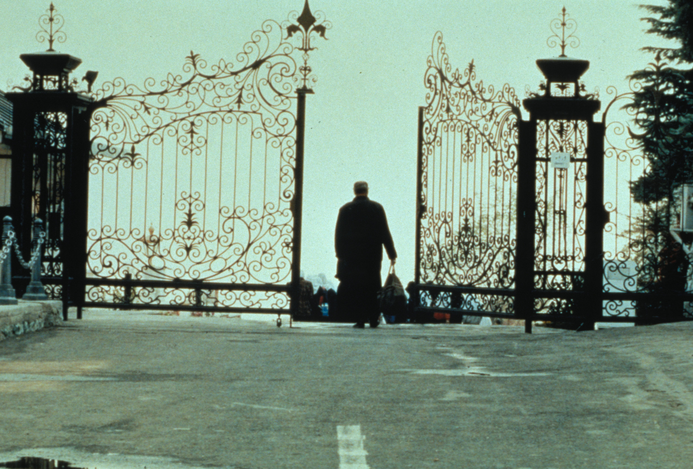
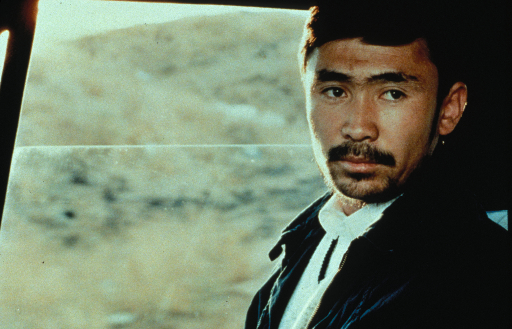
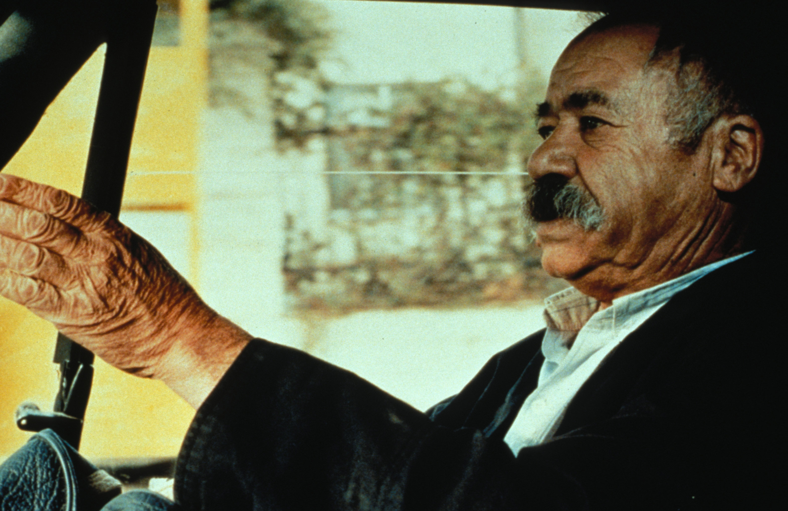

03 / The story
One car.
Three people.
Mr. Badii drives near Tehran.
He is very sad and asks for help.
Three people give different answers.
We listen with him.

A classroom presentation
Abbas Kiarostami · 1997 · Iran
A film about life and people

01 / A question
A kind person.
A good talk.
A small, happy moment.
02 / The director
He made films, took photos, and wrote poems.
He was born in Tehran in 1940.
He was an important Iranian director.
His films help us look at everyday life.
03 / The story
Mr. Badii drives near Tehran.
He is very sad and asks for help.
Three people give different answers.
We listen with him.
04 / The pictures

05 / The ideas
Sometimes we feel alone.
Talking can help us feel less alone.
Small things in life can matter.
06 / A big film prize
The first Iranian film to win the top prize at Cannes, a film festival in France.
It shared the prize with The Eel by Shohei Imamura.
07 / What I think
I like this film because it gives me time to think. It shows me why listening to another person matters.
08 / Closing
What small thing makes you happy?
Thank you
← → / Space: change slide · F: full screen